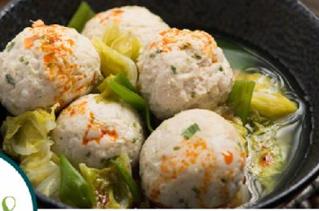

Chicken Meatballs and Napa Cabbage
Subtle flavor family favorite.

Ingredients
- 1 1/4 lbs lean ground chicken
- 1 large egg
- 1 tsp salt
- 2 Tbsp ginger, minced
- 4 cloves garlic
- 5 Cups sliced napa cabbage
- 2 Cups chicken stock
- 4 scallions
- 1 tsp chili oil
Instructions
- Combine chicken, egg, salt, pepper, 1 Tbsp ginger, and minced scallions in bowl. Mix well.
- In a large wok or skillet, combine garlic, chicken stock, and remaining ginger. Bring to a boil.
- Shape meat into loose balls, drop into broth. Add remaining scallion pieces.
- Lower temperature to a simmer.
- Once meatballs are cooked, add the cabbage and cover. Allow cabbage to soften.
- Serve and garnish with chili oil.
Chef's Notes
Subtle asian chicken and broth. We usually double this.